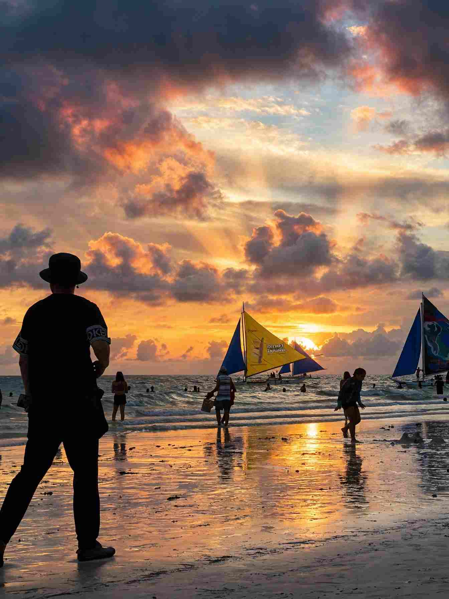

Getting to Boracay from Cebu takes one short flight, one tricycle ride, one boat crossing and one more ride on the island. The flight is the easy part. What trips up first-timers is the chain of small fees and hand-offs between the airport gate and the hotel door, each one cheap on its own and easy to underestimate when added together.
The fastest route is a direct flight from Mactan-Cebu to Caticlan, which sits a few minutes from the jetty where boats leave for the island. Cebu also has flights to Kalibo, a bigger airport in Aklan that can undercut the Caticlan fare but adds a long road transfer. There is no practical sea route from Cebu, so for almost everyone this is a flying trip.
Below you will find how the two routes compare, what the jetty-to-island leg really costs, which months suit which kind of trip, and how to plan the journey home so you do not miss your flight.

Caticlan or Kalibo: The Short Answer
Fly into Caticlan unless you have a good reason not to. It is the airport closest to the water, and the whole journey from Cebu to a White Beach hotel can be done in a single morning or afternoon. Kalibo only makes sense when the fare saving per person is bigger than the cost of the van plus two or more extra hours on the road, which is most likely for a group splitting a private vehicle.
A weekend of two nights is realistic from Cebu through Caticlan. Through Kalibo, the transfer eats enough of a short stay that you would want at least three nights to make it worthwhile.
Route 1: Cebu to Caticlan, Then the Jetty
The flight
Cebu Pacific, Cebgo and Philippine Airlines have all been listed on the Cebu to Caticlan sector, and the flight takes roughly an hour. Fares swing a lot with the date, so treat any single price as a snapshot. Promo seats can be very cheap, while holiday weekends can cost several times more. Check baggage and seat charges on a low-cost carrier before comparing, because the cheapest headline fare is not always the cheapest ticket once a checked bag is added.
Airport to jetty to island
Caticlan Airport is close to Caticlan Jetty Port, so a tricycle or shared ride covers the gap in minutes. At the jetty you register with a valid ID, pay the terminal fee and the environmental fee, then board a pump boat for the crossing to Cagban Port on Boracay. The crossing itself is short, often around fifteen minutes. Have your hotel name and your return date ready when you register, since the desk asks for them.
Regular boats run from early morning until roughly eight in the evening. Later crossings are fewer and tend to leave only when the boat is full, and strong winds can suspend service altogether. In rough-sea months the crossing may be routed through Tabon Port on the Caticlan side and Tambisaan on the Boracay side, which changes the fees and the last leg of your ride. Ask at the jetty counter which port is in use that day.
Cagban to your hotel
From the island port, shared e-trikes head toward the D'Mall area for a small per-seat fare, while a chartered e-trike to your hotel typically costs more depending on distance and bags. Most stays are along White Beach, so tell the driver your station number and the resort name.
Route 2: Cebu to Kalibo and the Long Van Ride
Kalibo is the capital of Aklan and a larger airport, which is why fares to it can come in lower. After landing you still need a road transfer of around two hours to Caticlan, longer in heavy traffic. Shared vans are priced per seat and private vans per vehicle, so ask the van desk at the arrivals area for the rate and compare it with your fare saving before you book the cheaper flight.
Two questions are worth asking before you pay. Does the van go all the way to Caticlan Jetty Port, or does it stop in town? And are the jetty fees included, or do you pay them separately? Most shared vans do not bundle the fees. Once you reach the jetty, the process is identical to Route 1.
Plan on roughly five to six hours door to door from Cebu City to your Boracay hotel by this route, against about half that through Caticlan. That gap is the real price of the cheaper fare.
What the Trip Really Costs
Bring cash in small bills. The jetty counters prefer it, and card acceptance on the island can be patchy outside the bigger resorts.
The terminal fee at the Caticlan Jetty Port has been ₱150 each way. The Boracay environmental fee is paid once per stay at ₱150 for local tourists and ₱300 for foreigners, with reduced rates for some groups such as senior citizens and persons with disabilities, so carry the ID that proves it. The boat fare is about ₱50 to ₱100 per person. Fees do change, so confirm the amounts at the counter on the day.
Add those up for a solo local traveller arriving: the airport tricycle (₱50 to ₱150), terminal fee, environmental fee, boat and a chartered e-trike come to roughly ₱550 to ₱850 per person. Sharing a tricycle and e-trike with companions cuts the ride portion sharply. The return leg is cheaper because the environmental fee is not charged again, but still plan on around ₱400 to ₱700 for a solo traveller.
Pre-booked door-to-door transfers bundle the van, fees and boat into one price, which is convenient if you land late or have heavy luggage. Compare their quote against the DIY total above and decide whether the convenience is worth the difference.
For a place to stay, rates vary widely by station and season. Basic rooms away from the beach start around ₱1,500 a night, while beachfront mid-range stays can run several times that during peak months. These are ballpark figures, and the best way to check is to compare a few dates on a booking site.
Best Months to Go
Boracay follows two monsoon seasons. The drier, calmer stretch, called Amihan, runs roughly from November to April. White Beach on the west side is at its calmest, skies are clearer and humidity is lower. The wetter Habagat season, from about June to October, brings rougher seas on the White Beach side, more rain and a higher chance of boats being delayed. Typhoons can disrupt flights and crossings any time from mid-year through the end of the year, so book flexible fares if you travel in those months.
Dry does not mean quiet. Christmas to New Year and Holy Week are the busiest and priciest periods. Holy Week in 2027 falls in late March, so if you want Amihan weather without the biggest crowds, aim for January, February or April outside the holiday weeks. Wind sports around Bulabog Beach on the east side generally follow the Amihan winds, which is worth knowing if kiteboarding is why you are going.
If you are comparing seasons across the Visayas, the month-by-month Cebu weather guide gives the same rhythm for the islands you are leaving behind.
Which Part of White Beach?
White Beach runs roughly four kilometres and is divided into three stations. Station 1 at the north end is the quieter, more resort-heavy stretch. Station 2 is the middle, with the most restaurants, shops and nightlife. Station 3 at the south end generally has the more budget-friendly rooms. All three share the same sand, so the choice is really about noise and walking distance.
For a quieter beach day, Puka Shell Beach at the northern tip has coarser sand and fewer crowds. Island-hopping tours to nearby rocks and snorkelling spots are sold all along the beach; ask what the price includes, such as lunch and port fees, before you compare quotes. Boracay enforces rules on the beach itself, including limits on smoking and drinking, so follow posted signs and swim only inside marked zones.
Plan the Trip Home Before You Arrive
The return journey is the one that bites. Allow time for the e-trike to Cagban, the boat, registration or clearance at the jetty, the ride to Caticlan Airport and check-in. As a planning guess rather than an official rule, leaving your hotel about three to four hours before a Caticlan departure keeps you out of trouble, and more if the sea is rough or it is a holiday weekend. If you booked through Kalibo, add the full van transfer on top.
Avoid the last flight of the day if you can. A delayed boat or a cancelled sector leaves you stranded with no slack, and a morning departure gives you the afternoon to rebook if something goes wrong.
Before You Book
Boracay is busier and pricier than most beaches around Cebu, and the island rewards a short, well-planned stay more than a long, improvised one. If you are still choosing between beach destinations from Cebu, the Palawan comparison covers a bigger trip, and Panglao and Alona Beach in Bohol is a lower-effort alternative that needs no boat transfers.
If Boracay is the plan, pick Caticlan, book a morning flight both ways, bring cash for the jetty, and confirm the current fees and port in use at the counter before you pay.